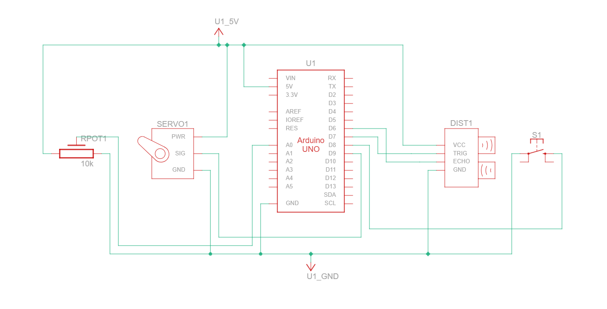
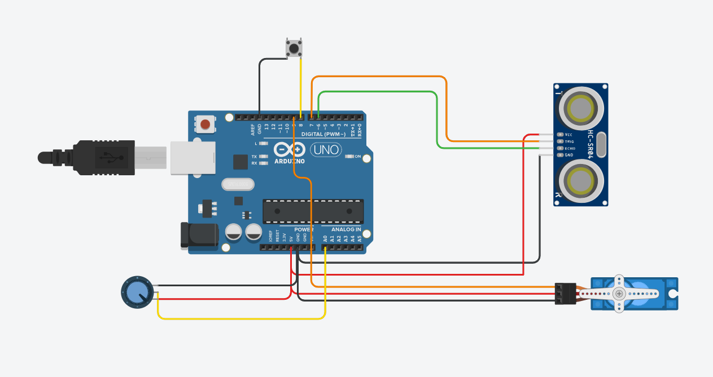
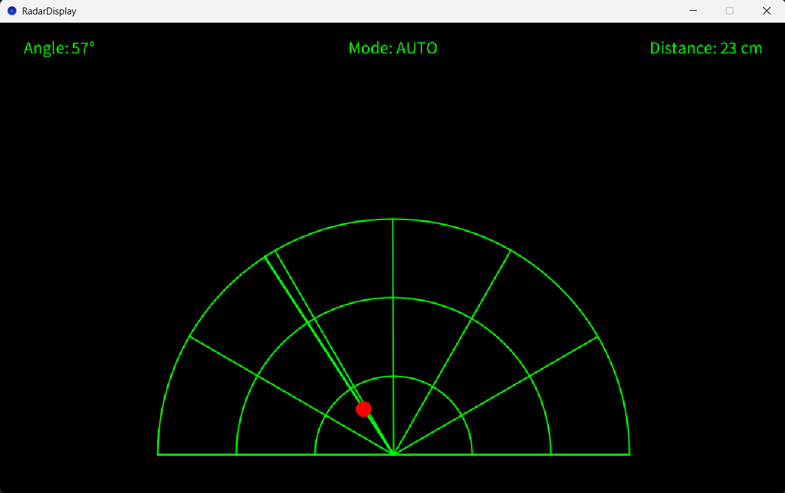

The Problem
The goal of this project was to move beyond basic Arduino examples and build a complete embedded system with clean modular architecture. Rather than simply measuring distance, I wanted to combine sensing, actuation, user input, and desktop visualization into a single project while practicing hardware abstraction and modular firmware design.
The main challenge was coordinating the servo, ultrasonic sensor, input controls, and Processing visualization without turning the sketch into a single tightly coupled loop.
Design & Architecture
The project is split into four modules so each responsibility stays isolated and easier to test.
- Servo Control Module — handles automatic sweep and manual positioning.
- Ultrasonic Sensor Module — performs distance measurement.
- Input Module — reads the potentiometer and mode switch.
- Main Controller — coordinates all modules and sends formatted serial data to Processing.
Key Design Decisions
- Modular programming was used instead of one large Arduino sketch.
- Processing replaced a 16×2 LCD to provide a more informative radar visualization.
- A state-based architecture separated automatic and manual operating modes.

Components & BOM
| Component | Qty | Purpose |
|---|---|---|
| Arduino Uno | 1 | Main microcontroller for sensing, servo control, and serial communication. |
| HC-SR04 Ultrasonic Sensor | 1 | Measures distance to objects in front of the radar. |
| SG90 Servo Motor | 1 | Rotates the sensor through the scanning range. |
| 10k Potentiometer | 1 | Provides manual position input when manual mode is active. |
| Toggle Switch | 1 | Selects between automatic and manual scanning modes. |
| Breadboard | 1 | Supports prototyping and module interconnection. |
| Jumper Wires | 1 set | Connects sensors, servo, controls, and power rails. |
Build Photos



Code & Technical Details
The Arduino sketch is organized around small functions for scanning, sensing, input handling, and serial output. The main loop selects the active mode, updates the servo position, reads distance, and sends formatted data to Processing.
void loop() {
if (isAutomaticMode()) {
autoSweep();
} else {
manualPosition();
}
int angle = getServoAngle();
int distance = measureDistance();
sendSerialData(angle, distance, isAutomaticMode());
}
Build Log
Failures & Fixes
Final Performance
- Scanning Range: 0°–180°
- Operating Modes: Automatic & Manual
- Visualization: Processing Desktop Radar
- Communication: USB Serial (9600 baud)
What I Learned
This project reinforced the value of modular firmware organization, serial communication, hardware abstraction, state-based programming, and embedded debugging.
What I'd Do Differently
- Replace delay() with millis()
- Add radar trail effects
- Add distance filtering
- Implement standalone OLED/TFT visualization
- Port the project to ESP32